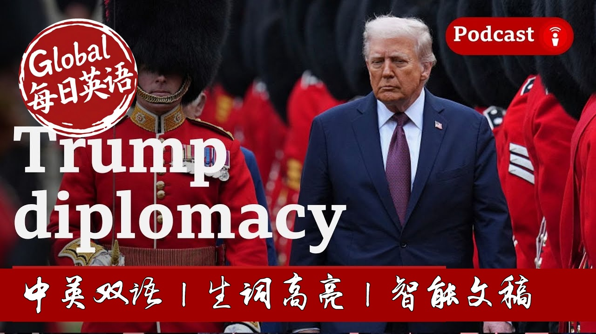

【BBC 20250921 特朗普英国国事访问全解析：外交博弈、加沙分歧与联合国大会前瞻｜美英特殊关系｜自由言论风波】
Summary: Trump concluded a state visit to the UK, where he held a one-on-one meeting with Prime Minister Keir Starmer without aides to discuss foreign policy. The visit highlighted the special relationship between the two nations amid meticulous planning and symbolic gestures, such as serving port from 1945. However, tensions emerged during the press conference, particularly over Gaza, where Trump emphasized the return of hostages before any solution, contrasting with European calls for recognizing a Palestinian state. The upcoming UN General Assembly will likely amplify these disagreements, with Trump's stance on Russia-Ukraine and trade policies also facing scrutiny from global leaders.
摘要： 特朗普完成了对英国的国事访问，与首相凯尔·斯塔默举行了无助手的一对一会晤，讨论外交政策。此次访问凸显了美英特殊关系，活动策划细致入微，包括提供1945年的波特酒等象征性举动。然而，新闻发布会上紧张局势显现，尤其在加沙问题上，特朗普强调在人质获释前无法解决冲突，与欧洲承认巴勒斯坦国的呼吁形成对比。即将召开的联合国大会可能放大这些分歧，特朗普在俄乌冲突和贸易政策上的立场也将面临全球领导人的审视。

⏱️ Estimated Reading Time: 38 min.
📚 四级生词 📚 六级生词 📚 雅思生词 📚 托福生词 📚 专八生词 📚 SAT生词 📚 考研生词 📚 GRE生词
It was interesting, even Starmer making the point that they'd had a one-to-one meeting, no aides, no nothing, in a room, and that that was the point at which they discussed the foreign policy when it was just mano a mano, nobody else there.
And so we're relying, I guess, on both of their version of events or interpretation of the conversation as to just what was discussed.
Hi, guys.
How are you?
Hi, Caitríona.
Hi, Bernd.
Hi.
Hey.
Hi.
How are you guys?
Good.
I mean, we're talking at the end of what's been a really big week for the BBC.
Bigging up the British part of our name with the state visit by President Trump to the UK.
I mean, no matter who the president is, hosting a state visit like that is huge.
And it puts international relations, in this case, the special relationship right front and centre, doesn't it?
Um, you know, how many times have we said the word special relationship over the past week?
And it's just, it's coming at a really interesting timing.
Ahead of the United Nations General Assembly in New York next week, when all of the relationships, special or otherwise, between America and all the other nations and between themselves as well, will be the forefront of what we're thinking about, what we're talking about.
So I thought maybe we might have a look at those relationships and how President Trump is handling those foreign relationships.
I mean, we might as well start, I suppose, with the special relationship given the visit this week.
One senior diplomat said to me, the best part about these visits is the wheels up at the end when the visiting dignitary, wherever they're from, leaves and you got away without any major mishaps and everything is a success.
And I mean, Courtney, you've been involved in some big trips like this before.
There's huge planning goes into it.
Yeah.
I cannot understate how much planning, how painfully coordinated these events are, down to the silverware, the flowers, the symbolism used through the meal we saw yesterday at Windsor Castle.
They served a port from 1945, in a nod to President Trump, who was the 45th and now the 47th president, and also they served a cognac from the year his mother was born.
Um, his mother, of course, who was of Scottish heritage.
And again, just this, the very, you know, trivial details are really deliberate and, um, negotiated, you know, in some of these demands are coming from the top.
I've covered state visits here in the US for South Korea, India, Australia, to name a few.
But I also travelled with the pre-advance team during the Biden administration to France.
Um, and negotiating that state visit.
And, you know, it really comes down to what is possible.
They, you know, I think these countries want to put their best foot forward for the president, whoever it may be.
But sometimes it's really about whether the, you know, they can figure it out logistically.
And also what's a security risk, which of course is a big concern these days.
Bernd, while all of that was going on, the White House must have been a bit of a ghost town, was it?
I mean, I was looking through the list of who traveled with President Trump this week, and it seems like his entire comms team, along with a few members of cabinet, close advisers like Stephen Miller and his chief of staff Susie Wiles as well.
It was definitely very, very quiet.
Certainly anyone senior at the White House was was either on the trip or following the trip very closely.
There was a lot of competition among the Trump team to be there, just because of the optics of it and how important that relationship is.
Obviously, not everyone could be there at the big dining table, for example.
So I think there was probably behind the scenes, a lot of kind of wrangling to be in one of those prime positions.
But certainly, you know, from my perspective at the White House, it was very much a ghost town.
And I think, broadly speaking, both sides will have been quite happy with how it went off.
I mean, perhaps one of the more shocking things from the press conference was President Trump saying he didn't know who Lord Peter Mandelson was, the now fired UK ambassador to the US.
That must have stung a little bit.
I thought that was the best case scenario for both sides, and that that question came and went very quickly.
I mean, it does ring a little hollow for Trump to say he doesn't know him.
He was standing right next to him.
Uh, but, you know, as they didn't discuss kind of the broader Epstein question and it wasn't kind of pressed, which I think for a White House that's been trying to get away from that issue for months now and dismiss it as a dead issue.
I thought that went really well for for both sides from their perspectives.
I mean, it might have been because of how the questions were asked as well.
You know, I think there were maybe five or six questions from the British side of the journalists who were at that last press conference.
And I know, Courtney, I came to maybe three, I think, from the American side of all of the reporters who had traveled over.
Yes, I've actually been texting with some of the press corps, and a few of them are a bit furious about, um, you know, travelling all the way there, um, being promised this opportunity to question both the prime minister and the president, uh, particularly because a lot of these events were closed to press.
So this was really the only opportunity to do so.
Um, and only three questions came from the US side, and I believe they were GB news, Real News America and Fox News as well.
So there were a lot of hands that were raised that went unanswered, unfortunately.
And I suppose we should say for people who aren't maybe aware of all of those media organisations, that they would be three media organisations who are, um, very supportive of President Trump and this administration.
So I thought it was quite interesting.
The questions that came from the American side were very awkward and uncomfortable questions for Sir Keir Starmer and not for the president, whereas the questions that came from, if we want to call it the British side of the room, were very uncomfortable for both leaders, weren't they?
A lot of focus in particular around Gaza.
I think Gaza was, you know, there wasn't kind of a spat of any kind when the two men were speaking.
But Gaza was obviously one point in which there was a lot of disagreement about where to go forward.
I mean, Starmer was was very clear, uh, and Trump, you know, continues to, you know, be very clear on his own side that there is no solution until the hostages are back.
And obviously, that's not the position of the UK or European powers, especially now that they have plans to recognise a Palestinian state, which is something Trump has been quite critical of in the past.
I think that's a major point of disagreement going into the UN General Assembly, where it's probably going to be highlighted much more given, given the focus of the Assembly this year.
Yeah.
You know, the US is going to be, um, you know, the sort of lone country next week, as we do see a lot of these countries come together and recognise Palestine.
It was clear, though, that, um, this was raised between both leaders, um, and Keir Starmer, using some of that soft power to explain the position.
He was pressed on it several times, um, about his plans to recognise Palestine.
And he said, you know, this is about ramping up pressure on Netanyahu to speed up the aid that is, um, being sent into Gaza and not about, you know, appeasing, um, the liberal parts of his party, right?
And we, you know, we heard from Donald Trump that this was one of the few areas that both men disagreed on.
Um, but it's clearly something that, you know, as Bernd said, will be front and centre next week.
And to that point, quickly, I just think it was very telling that in Trump's response on Gaza, the civilian casualty toll in Gaza wasn't really mentioned.
I mean, his comments were very much focused on the return of the hostages rather than the broader conflict and what it's meant for people in Gaza.
I think that shows kind of how different the perspectives are between the US and its European allies on that particular issue of humanitarian aid and the civilians.
Yeah, I thought that was quite striking, actually.
And I think that's where a lot of the focus will be next week in New York is, I don't think President Trump, despite how many questions he was asked, once himself referred to the humanitarian crisis or the suffering of civilians in Palestine.
And also when he was asked, at what point would he use influence on Israel to flood aid to stop killing civilians, he said, only when all the hostages are released.
Which is kind of I don't think we've heard it that, sort of, bluntly and baldly from him before.
I mean, everything he said was really fully in agreement with what you might hear Prime Minister Benjamin Netanyahu from Israel saying.
I mean, we did hear a couple of weeks ago President Trump talking about the awful suffering and the tragic deaths and so on.
But he didn't get into that in this press conference.
And I think that's a good indicator of just how awkward things are going to be next week, when all of these allies of the US are raising this issue, pressing for change, you know, trying to use the heft of the international community for action, which so far has been pretty powerless, it would seem.
To that point, I also think it's notable that over the last few weeks and months, you know, President Trump has kind of seemed to shift away from any suggestion that there could be a negotiated settlement to the end of the conflict.
I mean, there's real, towards the beginning of the administration, we saw more discussion of of peace talks and the potential outcome from those.
But certainly for at least the last two months, President Trump, at least in his public comments, seems quite content to let the conflict play out militarily.
You know, in his view, there can't be any negotiated settlement without those hostages, which, again, is a completely different viewpoint than than most other countries that are involved in bringing peace to Gaza.
Um, you know, and I think we're going to continue seeing that going forward, especially if if now that there's an offensive in Gaza City, for example, the Israelis also don't seem to be even discussing the possibility of a negotiated settlement until their military objectives are completed.
And I suppose the US showed its hand as well, didn't it, in terms of restricting the visas for members of the Palestinian delegation to actually even attend the United Nations General Assembly next week.
The other big one, of course, where there'll be a lot of focus, is on Russia's war in Ukraine.
We're going to hear from President Putin and President Zelensky next week, insofar as we understand it at this point anyway.
Um, and of course, the big thing about Unga, as it's called in the trade is actually those speeches that are made in the assembly hall, but also it's all the sidebar conversations, isn't it?
I mean, it's another chance for President Trump to sit with President Zelensky and possibly with President Putin.
Following on from their meeting in Alaska just a few weeks ago, what are you guys going to be looking out for?
Yeah, I mean, I think even if you, um, take anything from his press conference today with the prime minister, I mean, Russia obviously is a huge sticking point.
Um, the prime minister said going into these meetings, he wanted to ramp up pressure on the president to, um, you know, really start following through with imposing some of these economic sanctions that he has threatened.
And, um, so far hasn't followed through on.
Um, and we heard from the Prime Minister saying that, you know, the only time that they've seen Putin indicate that he's willing to shift from where he's firmly standing, um, has been through Donald Trump, but unfortunately, you know, they just haven't gotten the president to follow through.
And that seemed to be one of the main, uh, conversation topics they had this week.
And we should expect next week more leaders to try and use some of their soft power, getting Donald Trump's ear.
And, you know, among those leaders, you know, certainly, uh, Zelensky will be one of them.
Also, I mean, that frustration that was kind of hinted at in the Starmer press conference, I think we're going to hear that from other European leaders, you know, France, Germany in particular.
And when Donald Trump takes the stage on Tuesday, I'll be listening to see whether he actually addresses any of those criticisms.
Obviously, there's a lot of frustration in European capitals that his promises of additional sanctions have been pushed back.
And as things stand now, instead, he's turned it on the Europeans and that he's pushing them to take additional sanctions on China and India, for example, for their support of Russia in the war, which, you know, I think opens up a lot of possible minefields in terms of these speeches.
But overall, I think one of the more interesting things of Unga will be whether Trump addresses the various criticisms of him, whether they be from European capitals or from people such as Brazil's president, President Lula.
Um, so I'd be very curious to see what he has to say about Trump and what Trump responds in terms of using tariffs as kind of a foreign policy mechanism rather than just an economic one.
Yeah, that sphere of influence is something that I'm going to be looking out for as well, because, you know, we talk about the big speeches that are made.
But I thought in the press conference at the end of President Trump's visit to the UK, Keir Starmer made the point a couple of times.
You know, President Putin is not behaving like someone who's interested in peace.
His actions are not those of someone who's seeking peace.
Like, he's trying to get this message across to President Trump, who has said over the past few months, oh, you know, I think President Putin wants to come to the table.
He does seem to have shifted that now, saying he'd been I mean, he used a phrase, didn't he?
Something like, I feel really let down by him or he's let me down or something like that, that he had spoken about how he thought his personal relationship with President Putin would lead to peace.
And that hasn't come.
And President Trump is putting pressure on European nations to put those sanctions on India and China.
They don't want to do that.
They don't want to kind of weave those separate trade relationships into their support for Ukraine.
They want to try and keep those separate, as far as I can see it anyway.
Um, and President Trump addressing that as well by saying, notwithstanding all the tariffs that he's put on India for buying Russian oil and gas, he still thinks Prime Minister Modi is a good friend of his.
He talked about calling him to wish him a happy birthday the other week as well.
Yeah, they had a they did have a call, um, for the, uh, Prime Minister Modi's birthday.
And, um, just to to jump back to what you were saying about the pressure he's putting on the EU leaders, I do wonder how much of that is, um, you know, a strategy for the president to make demands, um, for conditions that he knows the EU countries can't necessarily meet.
There are certain member countries that are very dependent on Russian oil.
So he knows that these EU countries can't meet these demands, which sort of gives him space to avoid following through on some of these economic sanctions that EU leaders would like to see the US impose.
So I do, I think this sort of economic statecraft that Trump has really infused his foreign policy with, is going to be a point of contention next week, as several of these countries that you named, of course, Brazil being among them, try and negotiate with the president on the world stage.
You know, about the pressure that the Europeans will put on on Trump for Ukraine.
I've been speaking to a few people about that in the last few days, and one of them made the interesting point that, you know, it's unclear what else they can do that they haven't done to pressure Trump.
I mean, many of them were at the White House not very long ago for kind of that unprecedented meeting of Starmer and the European heads of state, and Zelensky, that were there, which, you know, that is kind of a sort of pressure push, that collective pressure push that we hadn't really seen before.
So I think for many people, there's a question of, you know, what can be accomplished at the General Assembly that wasn't accomplished at the White House.
It's interesting, Bernd, you mentioned Brazil a moment ago, because looking at the rundown of speakers for the UN General Assembly and it is subject to change, but as of now, it would seem that President Trump will speak immediately after, uh, Luis Inacio Lula da Silva, the president of Brazil.
So that could make for some sort of awkward green room moments, couldn't it?
As one goes out and the other goes in.
I think it certainly could.
And President Lula is someone who's been kind of outspoken about his lack of relationship with the Trump administration of any kind now.
You know, just recently in an interview with the BBC, he said he hasn't really spoken to anyone from the Trump administration, and they're having trouble getting administration officials to respond to them at all over the Trump administration's viewpoint that he's kind of persecuting his predecessor, Jair Bolsonaro.
And Bolsonaro was someone who had a lot of friends in the Trump White House.
They had a very close relationship personally.
And Brazil's view is that those sanctions, which are extremely high, are purely political.
And it'd be curious to see if if President Lula gets on to the podium at the General Assembly and says that outright.
For example, he said in the past that President Trump isn't the world's emperor.
And I think, you know, that sort of language could create kind of fireworks very early on in the in the General Assembly and these two huge countries pitting themselves against one another in a certain sense.
One thing I thought, just to follow on, Bernd, from the interview Lula gave to our BBC colleagues.
He said President Trump had a relationship with Bolsonaro, not Brazil.
And I think that most foreign leaders have figured that out, that, you know, the president isn't interested in what the relationship was, the US relationship was with a country, necessarily, before he came into power, back into power.
It is about his relationship with that foreign leader.
And again, that's why I think next week we'll see a lot of folks try and get a message to him, whether that's through a speech, whether that's on the sidelines, through a meeting.
Um, everybody obviously with their own foreign policy aims.
even Starmer making the point no aides, no nothing, in a room.
And that that was the point at which they discussed the foreign policy nobody else there.
on both of their version of events as to just what was discussed.
Um, and I think, you know, Sir Keir has worked really hard to kind of preserve that interpersonal relationship, even when the subject matter is really spiky.
Um, and we'll see that next week as well.
Of course, you know, President Trump and all his focus on foreign policy is coming at a time when domestic policy focus here is still raging over the issue of free speech, isn't it?
I mean, we saw it loom a little bit in his visit to the UK because obviously this administration has major problems with the Online Safety Act that the UK has passed, which requires tech firms to basically restrict some of the content to protect children and so on from what's on there.
But while he was there dealing with all of that foreign policy stuff in the UK, Jimmy Kimmel was, his show was pulled.
And, you know, the president responding at one or two in the morning when he was in the UK, saying he hoped other late night show hosts came after that.
And of course, Stephen Colbert has already had his show pulled.
Are you guys going to be watching out for movements in that over the next week, even though he's focusing on foreign policy stuff up in New York?
I certainly am, because it's not just the domestic angle of it, too, but a lot of countries, I mean, he has a lot of leaders who have similar worldviews, including on their own domestic politics to President Trump.
So, you know, whatever President Trump says about free speech, I'd be curious to see, you know, what does what does Hungary have to say after that?
What does Turkey have to say?
Are there other countries where there's, the government's been accused of, uh, politicising or silencing people in the media that they object to in one way or another?
And how much pushback there is from France, for example, or European countries that have kind of defended themselves from accusations from this administration and from others about their own freedom of speech record.
I think ultimately that freedom of speech thing could generally be a foreign policy issue as well.
I mean, at least in terms of the rhetoric.
I think that this has a lot of, you know, far reaching implications here because there's a couple narratives caught up into it.
Right?
There is the fallout from the Charlie Kirk assassination, um, and folks on the right and their, um, efforts to try and use this to sort of police, um, free speech, you know, whether it's hate speech or not.
Um, but also there's the narrative here of media companies getting caught up in this and, um, you know, making decisions about editorial content because they are afraid that perhaps a deal or a merger, um, will be affected, uh, or won't go through if they do not sort of fall in line with what the administration would like or expects.
Um, we've seen that in the past.
We're seeing that potentially with, um, you know, the Jimmy Kimmel decision.
Nexstar, which owns Disney was uh, is going through a merger and, um, we saw that Brendan Carr, the head of the FCC, which is the TV regulator here in the US, make comments, basically threatening, you know, to go after ABC and Disney, after the Jimmy Kimmel monologue.
And as a result, we saw ABC pull, um, suspend the Jimmy Kimmel show.
So this is something that, you know, is going to affect a lot of a lot of companies as they sort of think through, you know, uh, business decisions.
Um, but also, you know, the, the public entirely in the US in terms of what people feel comfortable being able to talk about and exercising their, their free speech rights.
It just shows the level of President Trump's power and influence, I suppose, on the foreign stage, but also here domestically.
We will be talking about this at length next week, I'm sure.
Um, I will be joining live from New York.
Uh, while I'm at United Nations General Assembly, I really just want to say live from New York.
It's Saturday night.
Every time I have to say live from New York, it's BBC news.
I almost trip over pretending I'm hosting SNL.
But anyway, I think I might spend the weekend practicing these, uh, making these transatlantic whiskey sours that they had at the banquet.
They sound quite delicious.
Um, but yeah, I hope you guys have a nice weekend, and I will talk to you soon.
See you soon.
Bye, guys.
Bye!
Bye!
If you enjoyed this episode of The President's Path, then like and subscribe to our YouTube channel.
We would love to hear from you, so please leave us a comment below or email us on path@bbc.co.uk.